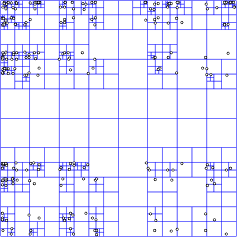

500+ Billion Points
Organizing Point Clouds as Infrastructure
Connor Manning
Focus is on the organization aspect: indexing
The problem
Can we put Iowa's lidar in a web browser?
Driving force behind implementation
Why?
Well, it would be cool
As seen soon, solving this has other benefits
Iowa lidar collection
≈ 37,000 files
≈ 170 billion points
> 4.5 TB uncompressed
> 400 GB compressed
Organized as full-resolution tiles
A point cloud service
Client-controlled access
Hierarchical
Random-access
Dynamic resolution
Flexible
Fragmented dataset → single logical unit
Doesn't necessarily need to be a dynamic service
Static serving isn't ruled out
Flexible - not only for visualization
Adapting the data as-is?
Difficult to access
Difficult to manage
Visualization only in pieces
Yes, Iowa is flat
A lot of data here - better not to touch it
Difficult to access
Clients can't drive the access
Have an AOI - need large downloads
No preview
Difficult to manage - from a logical standpoint
Can't treat data as a single unit
Need to sidecar metadata?
Need for reorganization
Cannot meet these needs with a *meta*-index
Would require too much dynamic work
Up-front cost is ok to trivialize later work
TODO Picture?
Want to make queries trivial
Otherwise ms response time impossible
Current organization is non-trivial
Why no meta-index?
Want to treat set as a logical unit
Need hierarchical access
Low-res overview has minimum of touching each file
Constraints
Memory
Losslessness
Modifiability
Visualization
Memory - can't fit entire uncompressed set in memory
Lossless - don't want to need original data
Modifiability - can add more data after-the-fact
Visualization
millisecond response times
LoD structure - targeting dynamic clients
Client-controlled - plasio/potree/etc.
Assumptions
Availability of scalable cloud computing
A parallelizable problem
Distributed filesystem
Geyser point cloud > generic "cloud" diagram
Assume we can reasonably rent computing power on-demand
Entire dataset not random across all files
Filesystem scales with computing power
Goal: a massive octree
Hierarchical
Increase depth → increase resolution
Tree depth layers
Data source: Vanuatu village, Nepal.
Global DIRT
A natural mechanism for visualization
Spatially distinct → trivially parallelizable

Quadtree splitting
By David Eppstein , Public Domain, 🔗
Trivial/natural method of parallelization
Stable & flexible
Insertion order doesn't matter
No concept of "balance"
By contrast: KD-tree - order matters
By KiwiSunset at the English language Wikipedia , CC BY-SA 3.0 , 🔗
Stable: no matter the impl details, output is the same
Important for adding new data to index as it's scanned
Avoids needing heuristics before indexing
# TODO - entwine stuff here
# (Ending) What does entwine enable?
- Quick overview of Greyhound
- Then speck.ly/potree interface
- CLI invocation samples, show "entwine build ..."
- Show speed results - coordinator with AHN set

## Links
- Entwine - entwine.io
- Plasio - speck.ly